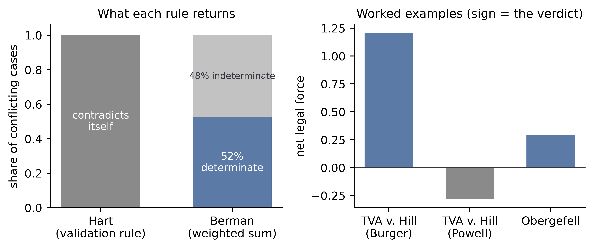
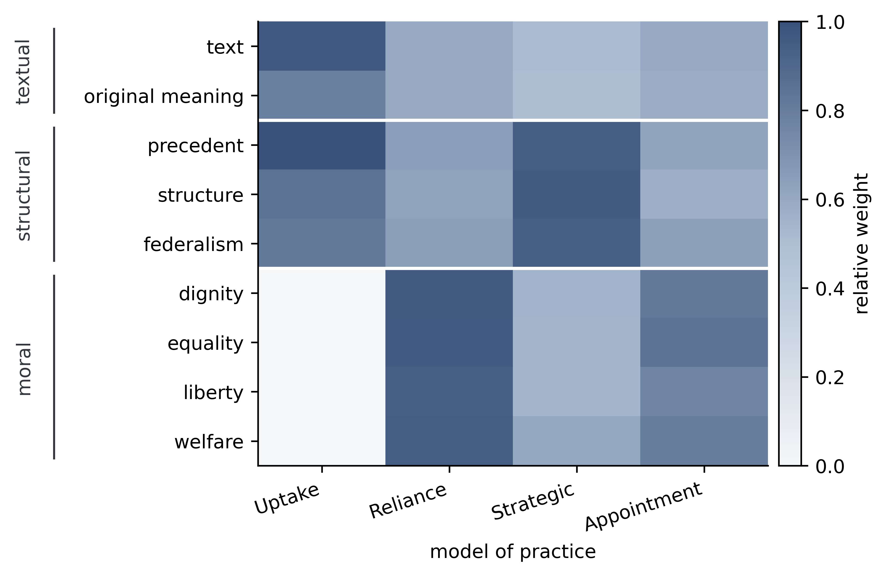
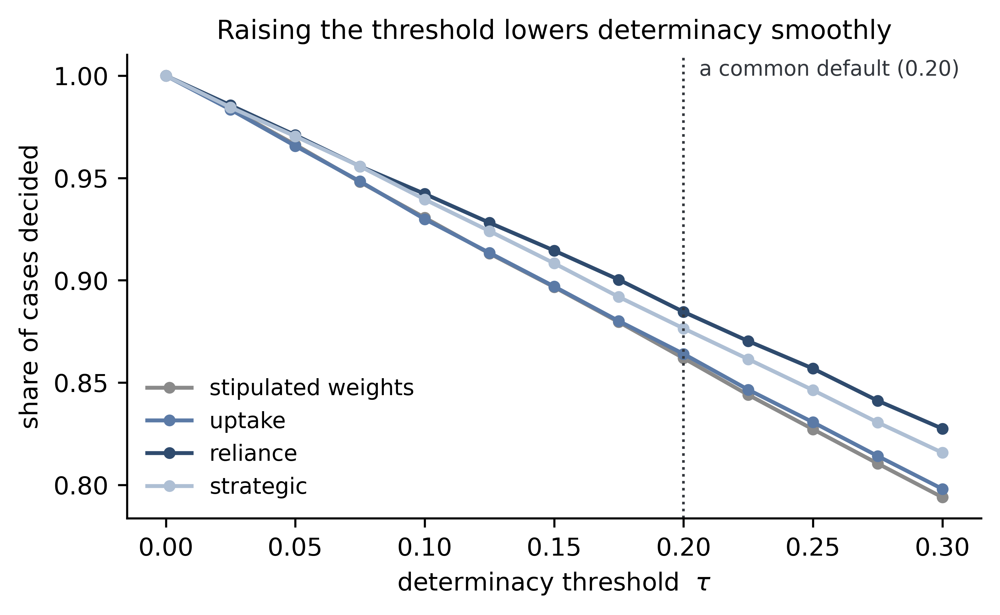
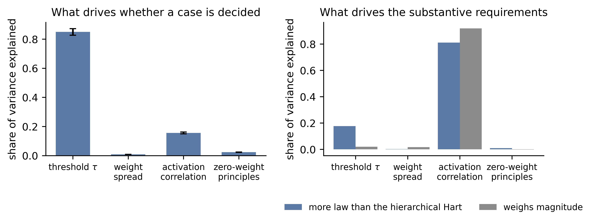
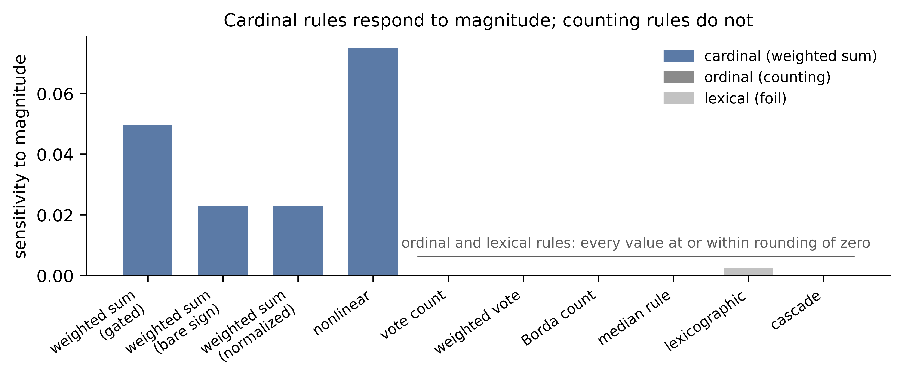

Mitchell Berman's principled positivism holds that legal content is fixed by a weighted balance of legal principles, each contributing force in proportion to its weight and to how strongly the facts of a case activate it.
A principle's weight is how much it counts in the legal system generally. Its activation is how strongly it bears on the case at hand. The theory says the weights are grounded in legal practice, but it does not say what practice is, or how a pattern of practice fixes a number. This project gives the account its first systematic computational test, implementing it faithfully, varying its parameters across ranges no thought experiment could canvass, and measuring the results against what the theory itself requires.
Given faithful weights, the weighted sum does what Berman says it does. Its sharpest result holds before any weight is tuned: where a Hartian validation rule contradicts itself, certifying both sides of a genuine conflict at once, the weighted sum returns a single verdict, because summing weighted forces yields one net force with one sign. It also tolerates rough weights, weighs magnitude rather than ranking by fixed priority, and leaves less law unsettled than a tiered Hartian hierarchy. Several of these properties hold as theorems rather than as artifacts of a particular run.
Four mechanisms by which practice might confer weight all clear every requirement the theory imposes. Yet they ground the principles into three distinct weight structures, and those structures decide about a third of cases differently. Practice is not unitary, and which construal of it governs can change what the law is.
Principled positivism therefore does not resolve the indeterminacy it inherited from Hart and Dworkin. It relocates it, from how principles combine, which it handles well, to which practice grounds the weights, and to the prior question of how legal grounds themselves change.
Every mechanism and every aggregation rule is held to the same four requirements, each drawn from something Berman claims or commits to, and each scored seed by seed across thirty random seeds.
| Requirement | Operational test | Basis |
|---|---|---|
| Well-defined | At least two principles carry weight above a small cutoff | The theory's plurality of weighted principles |
| Noise-tolerant | Critical uncertainty σ* ≥ 0.07 | "Rough weights suffice," his answer to Perry |
| Magnitude-weighing | On a magnitude-only perturbation, the sum changes its verdict more than five times as often as a lexicographic rule | Principles weigh; they do not rank |
| More law than Hart | A positive determinacy advantage over the hierarchical Hart baseline | His answer to the "too little law" worry |
Weight gradation and correlation benefit are measured but are not requirements. Berman's account, unlike Dworkin's, permits principles to carry equal weight, so no pass-or-fail verdict may depend on them.
| Mechanism | Weight is conferred by | Where the weights lean |
|---|---|---|
| Uptake | How often the bench invokes a principle | Textual and structural, with the moral principles at zero |
| Reliance | Embedding in the holdings that go on relying on it | Moral |
| Strategic | Judges adapting to which arguments move their colleagues | Structural |
| Appointment | Bench turnover, read out through surviving holding-support | Moral |
Reliance and appointment correlate at +0.93, closely enough that the two are in effect one structure. Uptake opposes both, at −0.78 and −0.75. So the four dynamics realize three distinct structures, not four.
The argument runs three separate Hartian comparisons, and they are never conflated.
Every figure below is computed on synthetic cases with independent activations, the conservative baseline, so each should be read as a floor. Correlation only improves the model's performance. The one exception is the margin over Hart, which reverses under category-correlated activations and is reported as such.
| Finding | Value |
|---|---|
| Determinacy, general | 86.2% |
| Determinacy, conflict cases | 79.2% |
| Validation rule contradicts itself on directly opposed cases | 100% |
| Weighted sum contradicts itself | 0% |
| Critical uncertainty σ*, mean | 0.090 |
| σ* under category correlation | 0.069 → 0.156 |
| Margin over the hierarchical Hart | +0.272 |
| Magnitude probe, sum against a lexical rule | 9.7× |
| Equal weights against a vote-count | 15.4% |
| Four mechanisms, different verdicts | 36.1% |
| Four mechanisms, opposite determinate verdicts | 27.2% |





Ten notebooks, a shared engine, and the saved outputs behind every number above. All results were verified in Google Colab, run in dependency order, with each notebook carrying its own self-checks.
| Notebook | What it establishes |
|---|---|
| 0 | Static properties: determinacy, noise tolerance, the Hart comparisons, the magnitude probe |
| 1 | Uptake: weights emerging from a simulated bench, the live/dead cut, the cluster gap |
| 2 | Reliance: weight from embedding in holdings |
| 3 | Strategic adaptation, trained by REINFORCE |
| 4 | The determinacy threshold swept from 0 to 0.30 |
| 5 | Ten aggregation rules across cardinal, ordinal, and lexical classes |
| 6 | Sobol variance decomposition over four inputs |
| 7 | The five theorems and the scope each is proved under |
| 8 | Rebuilds every figure, table, and caption |
| 9 | Appointment, and the decoupling test against reliance |
Every notebook above is downloadable from this page, as is the saved output behind each number and the LaTeX source of the paper. To run them:
Notebooks 0 and 7 should be run before 8, which reads their summary JSON.
The engine is computational/berman_core.py; it is duplicated inside
notebooks/ so a Colab session can import it without a path fixup, and the two
copies are byte-identical.
@article{kamper2026determinate,
author = {Kamper, David G.},
title = {More Determinate and Less Settled},
year = {2026},
note = {Manuscript}
}